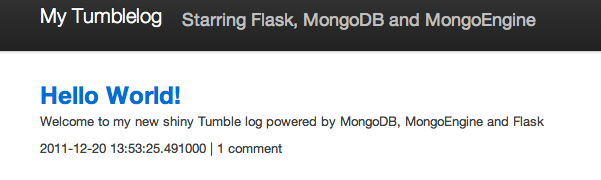
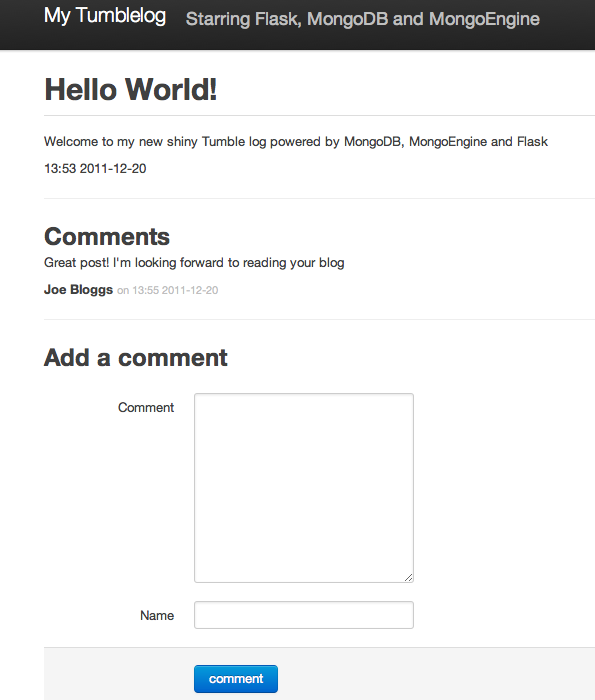
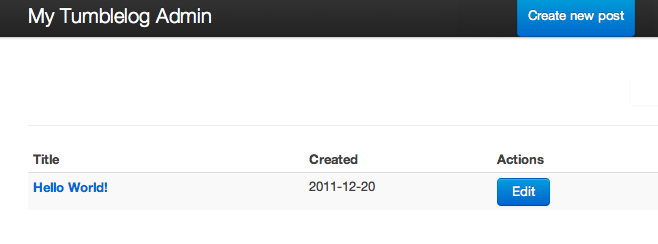
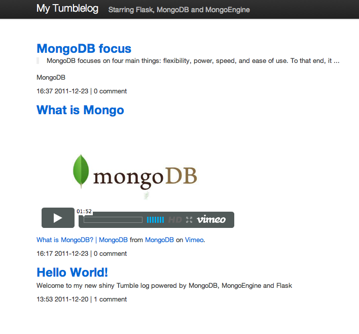

This tutorial describes the process for creating a basic tumblelog application using the popular Flask Python web-framework in conjunction with the MongoDB database.
The tumblelog will consist of two parts:
This tutorial assumes that you are already familiar with Flask and have a basic familiarity with MongoDB and have installed MongoDB. This tutorial uses MongoEngine as the Object Document Mapper (ODM,) this component may simplify the interaction between Flask and MongoDB.
Where to get help
If you’re having trouble going through this tutorial, please post a message to mongodb-user or join the IRC chat in #mongodb on irc.freenode.net to chat with other MongoDB users who might be able to help.
Begin by installing packages required by later steps in this tutorial.
This tutorial uses pip to install packages and virtualenv to isolate Python environments. While these tools and this configuration are not required as such, they ensure a standard environment and are strongly recommended. Issue the following command at the system prompt:
pip install virtualenv
virtualenv myproject
Respectively, these commands: install the virtualenv program (using pip) and create a isolated python environment for this project (named myproject.)
To activate myproject environment at the system prompt, use the following command:
source myproject/bin/activate
Flask is a “microframework,” because it provides a small core of functionality and is highly extensible. For the “tumblelog” project, this tutorial includes task and the following extension:
Install with the following commands:
pip install flask
pip install flask-script
pip install WTForms
pip install mongoengine
pip install flask_mongoengine
Continue with the tutorial to begin building the “tumblelog” application.
First, create a simple “bare bones” application. Make a directory named tumblelog for the project and then, add the following content into a file named __init__.py:
from flask import Flask
app = Flask(__name__)
if __name__ == '__main__':
app.run()
Next, create the manage.py file. [1] Use this file to load additional Flask-scripts in the future. Flask-scripts provides a development server and shell:
# Set the path
import os, sys
sys.path.append(os.path.abspath(os.path.join(os.path.dirname(__file__), '..')))
from flask.ext.script import Manager, Server
from tumblelog import app
manager = Manager(app)
# Turn on debugger by default and reloader
manager.add_command("runserver", Server(
use_debugger = True,
use_reloader = True,
host = '0.0.0.0')
)
if __name__ == "__main__":
manager.run()
You can run this application with a test server, by issuing the following command at the system prompt:
python manage.py runserver
There should be no errors, and you can visit http://localhost:5000/ in a web browser to view a page with a “404” message.
| [1] | This concept will be familiar to users of Django. |
Install the Flask extension and add the configuration. Update tumblelog/__init__.py so that it resembles the following:
from flask import Flask
from flask.ext.mongoengine import MongoEngine
app = Flask(__name__)
app.config["MONGODB_DB"] = "my_tumble_log"
app.config["SECRET_KEY"] = "KeepThisS3cr3t"
db = MongoEngine(app)
if __name__ == '__main__':
app.run()
See also
The MongoEngine Settings documentation for additional configuration options.
The first step in writing a tumblelog in Flask is to define the “models” or in MongoDB’s terminology documents.
In this application, you will define posts and comments, so that each Post can contain a list of Comments. Edit the models.py file so that it resembles the following:
import datetime
from flask import url_for
from tumblelog import db
class Post(db.Document):
created_at = db.DateTimeField(default=datetime.datetime.now, required=True)
title = db.StringField(max_length=255, required=True)
slug = db.StringField(max_length=255, required=True)
body = db.StringField(required=True)
comments = db.ListField(db.EmbeddedDocumentField('Comment'))
def get_absolute_url(self):
return url_for('post', kwargs={"slug": self.slug})
def __unicode__(self):
return self.title
meta = {
'allow_inheritance': True,
'indexes': ['-created_at', 'slug'],
'ordering': ['-created_at']
}
class Comment(db.EmbeddedDocument):
created_at = db.DateTimeField(default=datetime.datetime.now, required=True)
body = db.StringField(verbose_name="Comment", required=True)
author = db.StringField(verbose_name="Name", max_length=255, required=True)
As above, MongoEngine syntax is simple and declarative. If you have a Django background, the syntax may look familiar. This example defines indexes for Post: one for the created_at date as our frontpage will order by date and another for the individual post slug.
The manage.py provides a shell interface for the application that you can use to insert data into the tumblelog. Before configuring the “urls” and “views” for this application, you can use this interface to interact with your the tumblelog. Begin by issuing the following command to load the Python shell:
python manage.py shell
Create the first post using the following sequence of operations:
>>> from tumblelog.models import *
>>> post = Post(
... title="Hello World!",
... slug="hello-world",
... body="Welcome to my new shiny Tumble log powered by MongoDB, MongoEngine, and Flask"
... )
>>> post.save()
Add comments using the following sequence of operations:
>>> post.comments
[]
>>> comment = Comment(
... author="Joe Bloggs",
... body="Great post! I'm looking forward to reading your blog!"
... )
>>> post.comments.append(comment)
>>> post.save()
Finally, inspect the post:
>>> post = Post.objects.get()
>>> post
<Post: Hello World!>
>>> post.comments
[<Comment: Comment object>]
Using Flask’s class-based views system allows you to produce List and Detail views for tumblelog posts. Add views.py and create a posts blueprint:
from flask import Blueprint, request, redirect, render_template, url_for
from flask.views import MethodView
from tumblelog.models import Post, Comment
posts = Blueprint('posts', __name__, template_folder='templates')
class ListView(MethodView):
def get(self):
posts = Post.objects.all()
return render_template('posts/list.html', posts=posts)
class DetailView(MethodView):
def get(self, slug):
post = Post.objects.get_or_404(slug=slug)
return render_template('posts/detail.html', post=post)
# Register the urls
posts.add_url_rule('/', view_func=ListView.as_view('list'))
posts.add_url_rule('/<slug>/', view_func=DetailView.as_view('detail'))
Now in __init__.py register the blueprint, avoiding a circular dependency by registering the blueprints in a method. Add the following code to the module:
def register_blueprints(app):
# Prevents circular imports
from tumblelog.views import posts
app.register_blueprint(posts)
register_blueprints(app)
Add this method and method call to the main body of the module and not in the main block.
In the tumblelog directory add the templates and templates/posts directories to store the tumblelog templates:
mkdir -p templates/posts
Create a base template. All other templates will inherit from this template, which should exist in the templates/base.html file:
<!DOCTYPE html>
<html lang="en">
<head>
<meta charset="utf-8">
<title>My Tumblelog</title>
<link href="http://twitter.github.com/bootstrap/1.4.0/bootstrap.css" rel="stylesheet">
<style>.content {padding-top: 80px;}</style>
</head>
<body>
{%- block topbar -%}
<div class="topbar">
<div class="fill">
<div class="container">
<h2>
<a href="/" class="brand">My Tumblelog</a> <small>Starring Flask, MongoDB and MongoEngine</small>
</h2>
</div>
</div>
</div>
{%- endblock -%}
<div class="container">
<div class="content">
{% block page_header %}{% endblock %}
{% block content %}{% endblock %}
</div>
</div>
{% block js_footer %}{% endblock %}
</body>
</html>
Continue by creating a landing page for the blog that will list all posts. Add the following to the templates/posts/list.html file:
{% extends "base.html" %}
{% block content %}
{% for post in posts %}
<h2><a href="{{ url_for('posts.detail', slug=post.slug) }}">{{ post.title }}</a></h2>
<p>{{ post.body|truncate(100) }}</p>
<p>
{{ post.created_at.strftime('%H:%M %Y-%m-%d') }} |
{% with total=post.comments|length %}
{{ total }} comment {%- if total > 1 %}s{%- endif -%}
{% endwith %}
</p>
{% endfor %}
{% endblock %}
Finally, add templates/posts/detail.html template for the individual posts:
{% extends "base.html" %}
{% block page_header %}
<div class="page-header">
<h1>{{ post.title }}</h1>
</div>
{% endblock %}
{% block content %}
<p>{{ post.body }}<p>
<p>{{ post.created_at.strftime('%H:%M %Y-%m-%d') }}</p>
<hr>
<h2>Comments</h2>
{% if post.comments %}
{% for comment in post.comments %}
<p>{{ comment.body }}</p>
<p><strong>{{ comment.author }}</strong> <small>on {{ comment.created_at.strftime('%H:%M %Y-%m-%d') }}</small></p>
{{ comment.text }}
{% endfor %}
{% endif %}
{% endblock %}
At this point, you can run the python manage.py runserver command again to see your new tumblelog! Go to http://localhost:5000 to see something that resembles the following:
In the next step you will provide the facility for readers of the tumblelog to comment on posts. To provide commenting, you will create a form using WTForms that will update the view to handle the form data and update the template to include the form.
Begin by updating and refactoring the views.py file so that it can handle the form. Begin by adding the import statement and the DetailView class to this file:
from flask.ext.mongoengine.wtf import model_form
...
class DetailView(MethodView):
form = model_form(Comment, exclude=['created_at'])
def get_context(self, slug):
post = Post.objects.get_or_404(slug=slug)
form = self.form(request.form)
context = {
"post": post,
"form": form
}
return context
def get(self, slug):
context = self.get_context(slug)
return render_template('posts/detail.html', **context)
def post(self, slug):
context = self.get_context(slug)
form = context.get('form')
if form.validate():
comment = Comment()
form.populate_obj(comment)
post = context.get('post')
post.comments.append(comment)
post.save()
return redirect(url_for('posts.detail', slug=slug))
return render_template('posts/detail.html', **context)
Note
DetailView extends the default Flask MethodView. This code remains DRY by defining a get_context method to get the default context for both GET and POST requests. On POST, post() validates the comment: if valid, post() appends the comment to the post.
Finally, you can add the form to the templates, so that readers can create comments. Create a macro for the forms in templates/_forms.html will allow you to reuse the form code:
{% macro render(form) -%}
<fieldset>
{% for field in form %}
{% if field.type in ['CSRFTokenField', 'HiddenField'] %}
{{ field() }}
{% else %}
<div class="clearfix {% if field.errors %}error{% endif %}">
{{ field.label }}
<div class="input">
{% if field.name == "body" %}
{{ field(rows=10, cols=40) }}
{% else %}
{{ field() }}
{% endif %}
{% if field.errors or field.help_text %}
<span class="help-inline">
{% if field.errors %}
{{ field.errors|join(' ') }}
{% else %}
{{ field.help_text }}
{% endif %}
</span>
{% endif %}
</div>
</div>
{% endif %}
{% endfor %}
</fieldset>
{% endmacro %}
Add the comments form to templates/posts/detail.html. Insert an import statement at the top of the page and then output the form after displaying comments:
{% import "_forms.html" as forms %}
...
<hr>
<h2>Add a comment</h2>
<form action="." method="post">
{{ forms.render(form) }}
<div class="actions">
<input type="submit" class="btn primary" value="comment">
</div>
</form>
Your tumblelog’s readers can now comment on your posts! Run python manage.py runserver to see the changes.
While you may always add posts using the shell interface as above, in this step you will add an administrative interface for the tumblelog site. To add the administrative interface you will add authentication and an additional view. This tutorial only addresses adding and editing posts: a “delete” view and detection of slug collisions are beyond the scope of this tutorial.
For the purposes of this tutorial all we need is a very basic form of authentication. The following example borrows from the an example Flask “Auth snippet”. Create the file auth.py with the following content:
from functools import wraps
from flask import request, Response
def check_auth(username, password):
"""This function is called to check if a username /
password combination is valid.
"""
return username == 'admin' and password == 'secret'
def authenticate():
"""Sends a 401 response that enables basic auth"""
return Response(
'Could not verify your access level for that URL.\n'
'You have to login with proper credentials', 401,
{'WWW-Authenticate': 'Basic realm="Login Required"'})
def requires_auth(f):
@wraps(f)
def decorated(*args, **kwargs):
auth = request.authorization
if not auth or not check_auth(auth.username, auth.password):
return authenticate()
return f(*args, **kwargs)
return decorated
Note
This creates a requires_auth decorator: provides basic authentication. Decorate any view that needs authentication with this decorator. The username is admin and password is secret.
Create the views and admin blueprint in admin.py. The following view is deliberately generic, to facilitate customization.
from flask import Blueprint, request, redirect, render_template, url_for
from flask.views import MethodView
from flask.ext.mongoengine.wtf import model_form
from tumblelog.auth import requires_auth
from tumblelog.models import Post, Comment
admin = Blueprint('admin', __name__, template_folder='templates')
class List(MethodView):
decorators = [requires_auth]
cls = Post
def get(self):
posts = self.cls.objects.all()
return render_template('admin/list.html', posts=posts)
class Detail(MethodView):
decorators = [requires_auth]
def get_context(self, slug=None):
form_cls = model_form(Post, exclude=('created_at', 'comments'))
if slug:
post = Post.objects.get_or_404(slug=slug)
if request.method == 'POST':
form = form_cls(request.form, inital=post._data)
else:
form = form_cls(obj=post)
else:
post = Post()
form = form_cls(request.form)
context = {
"post": post,
"form": form,
"create": slug is None
}
return context
def get(self, slug):
context = self.get_context(slug)
return render_template('admin/detail.html', **context)
def post(self, slug):
context = self.get_context(slug)
form = context.get('form')
if form.validate():
post = context.get('post')
form.populate_obj(post)
post.save()
return redirect(url_for('admin.index'))
return render_template('admin/detail.html', **context)
# Register the urls
admin.add_url_rule('/admin/', view_func=List.as_view('index'))
admin.add_url_rule('/admin/create/', defaults={'slug': None}, view_func=Detail.as_view('create'))
admin.add_url_rule('/admin/<slug>/', view_func=Detail.as_view('edit'))
Note
Here, the List and Detail views are similar to the frontend of the site; however, requires_auth decorates both views.
The “Detail” view is slightly more complex: to set the context, this view checks for a slug and if there is no slug, Detail uses the view for creating a new post. If a slug exists, Detail uses the view for editing an existing post.
In the __init__.py file update the register_blueprints() method to import the new admin blueprint.
def register_blueprints(app):
# Prevents circular imports
from tumblelog.views import posts
from tumblelog.admin import admin
app.register_blueprint(posts)
app.register_blueprint(admin)
Similar to the user-facing portion of the site, the administrative section of the application requires three templates: a base template a list view, and a detail view.
Create an admin directory for the templates. Add a simple main index page for the admin in the templates/admin/base.html file:
{% extends "base.html" %}
{%- block topbar -%}
<div class="topbar" data-dropdown="dropdown">
<div class="fill">
<div class="container">
<h2>
<a href="{{ url_for('admin.index') }}" class="brand">My Tumblelog Admin</a>
</h2>
<ul class="nav secondary-nav">
<li class="menu">
<a href="{{ url_for("admin.create") }}" class="btn primary">Create new post</a>
</li>
</ul>
</div>
</div>
</div>
{%- endblock -%}
List all the posts in the templates/admin/list.html file:
{% extends "admin/base.html" %}
{% block content %}
<table class="condensed-table zebra-striped">
<thead>
<th>Title</th>
<th>Created</th>
<th>Actions</th>
</thead>
<tbody>
{% for post in posts %}
<tr>
<th><a href="{{ url_for('admin.edit', slug=post.slug) }}">{{ post.title }}</a></th>
<td>{{ post.created_at.strftime('%Y-%m-%d') }}</td>
<td><a href="{{ url_for("admin.edit", slug=post.slug) }}" class="btn primary">Edit</a></td>
</tr>
{% endfor %}
</tbody>
</table>
{% endblock %}
Add a temple to create and edit posts in the templates/admin/detail.html file:
{% extends "admin/base.html" %}
{% import "_forms.html" as forms %}
{% block content %}
<h2>
{% if create %}
Add new Post
{% else %}
Edit Post
{% endif %}
</h2>
<form action="?{{ request.query_string }}" method="post">
{{ forms.render(form) }}
<div class="actions">
<input type="submit" class="btn primary" value="save">
<a href="{{ url_for("admin.index") }}" class="btn secondary">Cancel</a>
</div>
</form>
{% endblock %}
The administrative interface is ready for use. Restart the test server (i.e. runserver) so that you can log in to the administrative interface located at http://localhost:5000/admin/. (The username is admin and the password is secret.)
Currently, the application only supports posts. In this section you will add special post types including: Video, Image and Quote to provide a more traditional tumblelog application. Adding this data requires no migration because MongoEngine supports document inheritance.
Begin by refactoring the Post class to operate as a base class and create new classes for the new post types. Update the models.py file to include the code to replace the old Post class:
class Post(db.DynamicDocument):
created_at = db.DateTimeField(default=datetime.datetime.now, required=True)
title = db.StringField(max_length=255, required=True)
slug = db.StringField(max_length=255, required=True)
comments = db.ListField(db.EmbeddedDocumentField('Comment'))
def get_absolute_url(self):
return url_for('post', kwargs={"slug": self.slug})
def __unicode__(self):
return self.title
@property
def post_type(self):
return self.__class__.__name__
meta = {
'allow_inheritance': True,
'indexes': ['-created_at', 'slug'],
'ordering': ['-created_at']
}
class BlogPost(Post):
body = db.StringField(required=True)
class Video(Post):
embed_code = db.StringField(required=True)
class Image(Post):
image_url = db.StringField(required=True, max_length=255)
class Quote(Post):
body = db.StringField(required=True)
author = db.StringField(verbose_name="Author Name", required=True, max_length=255)
Note
In the Post class the post_type helper returns the class name, which will make it possible to render the various different post types in the templates.
As MongoEngine handles returning the correct classes when fetching Post objects you do not need to modify the interface view logic: only modify the templates.
Update the templates/posts/list.html file and change the post output format as follows:
{% if post.body %}
{% if post.post_type == 'Quote' %}
<blockquote>{{ post.body|truncate(100) }}</blockquote>
<p>{{ post.author }}</p>
{% else %}
<p>{{ post.body|truncate(100) }}</p>
{% endif %}
{% endif %}
{% if post.embed_code %}
{{ post.embed_code|safe() }}
{% endif %}
{% if post.image_url %}
<p><img src="{{ post.image_url }}" /><p>
{% endif %}
In the templates/posts/detail.html change the output for full posts as follows:
{% if post.body %}
{% if post.post_type == 'Quote' %}
<blockquote>{{ post.body }}</blockquote>
<p>{{ post.author }}</p>
{% else %}
<p>{{ post.body }}</p>
{% endif %}
{% endif %}
{% if post.embed_code %}
{{ post.embed_code|safe() }}
{% endif %}
{% if post.image_url %}
<p><img src="{{ post.image_url }}" /><p>
{% endif %}
In this section you will update the administrative interface to support the new post types.
Begin by, updating the admin.py file to import the new document models and then update get_context() in the Detail class to dynamically create the correct model form to use:
from tumblelog.models import Post, BlogPost, Video, Image, Quote, Comment
# ...
class Detail(MethodView):
decorators = [requires_auth]
# Map post types to models
class_map = {
'post': BlogPost,
'video': Video,
'image': Image,
'quote': Quote,
}
def get_context(self, slug=None):
if slug:
post = Post.objects.get_or_404(slug=slug)
# Handle old posts types as well
cls = post.__class__ if post.__class__ != Post else BlogPost
form_cls = model_form(cls, exclude=('created_at', 'comments'))
if request.method == 'POST':
form = form_cls(request.form, inital=post._data)
else:
form = form_cls(obj=post)
else:
# Determine which post type we need
cls = self.class_map.get(request.args.get('type', 'post'))
post = cls()
form_cls = model_form(cls, exclude=('created_at', 'comments'))
form = form_cls(request.form)
context = {
"post": post,
"form": form,
"create": slug is None
}
return context
# ...
Update the template/admin/base.html file to create a new post drop down menu in the toolbar:
{% extends "base.html" %}
{%- block topbar -%}
<div class="topbar" data-dropdown="dropdown">
<div class="fill">
<div class="container">
<h2>
<a href="{{ url_for('admin.index') }}" class="brand">My Tumblelog Admin</a>
</h2>
<ul class="nav secondary-nav">
<li class="menu">
<a href="#" class="menu">Create new</a>
<ul class="menu-dropdown">
{% for type in ('post', 'video', 'image', 'quote') %}
<li><a href="{{ url_for("admin.create", type=type) }}">{{ type|title }}</a></li>
{% endfor %}
</ul>
</li>
</ul>
</div>
</div>
</div>
{%- endblock -%}
{% block js_footer %}
<script src="http://ajax.googleapis.com/ajax/libs/jquery/1.7.1/jquery.min.js"></script>
<script src="http://twitter.github.com/bootstrap/1.4.0/bootstrap-dropdown.js"></script>
{% endblock %}
Now you have a fully fledged tumbleblog using Flask and MongoEngine!
The complete source code is available on Github: <https://github.com/rozza/flask-tumblelog>